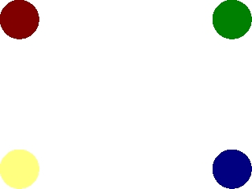
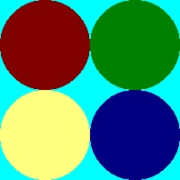
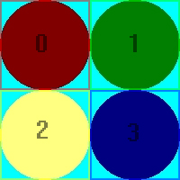

Clip Blitting and Sprite Sheets

Last Updated 1/04/2014
Sprite sheets are collections of images held in a single image file. They're useful for when you have large amounts of images but don't want to have to deal with many image files.In order to get the individual images you have to be able to clip the part you want when blitting. Now in this lesson we have a sprite sheet with 4 different dot sprites on it. This tutorial covers how to clip a sprite from a sprite sheet.
A Clip Rendering and Sprite Sheets tutorial with SDL 2 is now available.
//The surfaces
SDL_Surface *dots = NULL;
SDL_Surface *screen = NULL;
//The event structure
SDL_Event event;
//The portions of the sprite map to be blitted
SDL_Rect clip[ 4 ];
Here we have some global variables.
There's the screen surface, and the event structure from before.
We also have the "dots" surface which is the sprite sheet that contains all the dot sprites.
There's also an array of four SDL_Rects. These hold the offsets and dimensions of the 4 dot sprites.
There's also an array of four SDL_Rects. These hold the offsets and dimensions of the 4 dot sprites.
void apply_surface( int x, int y, SDL_Surface* source, SDL_Surface* destination, SDL_Rect* clip = NULL )
{
//Holds offsets
SDL_Rect offset;
//Get offsets
offset.x = x;
offset.y = y;
//Blit
SDL_BlitSurface( source, clip, destination, &offset );
}
Here's the surface blitting function from before but with some adjustments.
The new argument is the SDL_Rect called "clip" that defines the rectangular piece of the surface we want to blit.
We set NULL to be the default argument, which means
apply_surface( 0, 0, image, screen, NULL );
and
apply_surface( 0, 0, image, screen );
do the exact same thing.
We also changed the way we call SDL_BlitSurface(). We no longer just set the second argument to NULL, we now put the "clip" argument in it.
Now SDL_BlitSurface() will blit the region of the source surface defined by "clip". If "clip" is NULL, then it will blit the entire source surface.
The new argument is the SDL_Rect called "clip" that defines the rectangular piece of the surface we want to blit.
We set NULL to be the default argument, which means
apply_surface( 0, 0, image, screen, NULL );
and
apply_surface( 0, 0, image, screen );
do the exact same thing.
We also changed the way we call SDL_BlitSurface(). We no longer just set the second argument to NULL, we now put the "clip" argument in it.
Now SDL_BlitSurface() will blit the region of the source surface defined by "clip". If "clip" is NULL, then it will blit the entire source surface.
//Clip range for the top left
clip[ 0 ].x = 0;
clip[ 0 ].y = 0;
clip[ 0 ].w = 100;
clip[ 0 ].h = 100;
//Clip range for the top right
clip[ 1 ].x = 100;
clip[ 1 ].y = 0;
clip[ 1 ].w = 100;
clip[ 1 ].h = 100;
//Clip range for the bottom left
clip[ 2 ].x = 0;
clip[ 2 ].y = 100;
clip[ 2 ].w = 100;
clip[ 2 ].h = 100;
//Clip range for the bottom right
clip[ 3 ].x = 100;
clip[ 3 ].y = 100;
clip[ 3 ].w = 100;
clip[ 3 ].h = 100;
In the main function after everything is initialized and the files are loaded, we set the clip rectangles.
We're going to take this sprite sheet:
and set the clip rectangles to their designated regions:
Now we're ready to blit the individual sprites from the sprite sheet.
We're going to take this sprite sheet:

and set the clip rectangles to their designated regions:

like so.Now we're ready to blit the individual sprites from the sprite sheet.
//Fill the screen white
SDL_FillRect( screen, &screen->clip_rect, SDL_MapRGB( screen->format, 0xFF, 0xFF, 0xFF ) );
Now we fill the screen white using SDL_FillRect().
What SDL_FillRect() does is take the surface in the first argument, and fill the region in the second argument with color in the third argument.
The region in the second argument is the surface's clip_rect or the entire region of the surface.
The region in the second argument is the surface's clip_rect or the entire region of the surface.
//Apply the images to the screen
apply_surface( 0, 0, dots, screen, &clip[ 0 ] );
apply_surface( 540, 0, dots, screen, &clip[ 1 ] );
apply_surface( 0, 380, dots, screen, &clip[ 2 ] );
apply_surface( 540, 380, dots, screen, &clip[ 3 ] );
//Update the screen
if( SDL_Flip( screen ) == -1 )
{
return 1;
}
Now we actually blit the sprites.
Notice that every time we're blitting the same surface.
The only difference is that we're blitting a different piece of the surface.
The final result should look like this:
Now when you have many images you want to use, you don't have to keep thousands of image files. You can put collections of sprites in a single image and just blit the portion you want to use.
The final result should look like this:
Now when you have many images you want to use, you don't have to keep thousands of image files. You can put collections of sprites in a single image and just blit the portion you want to use.